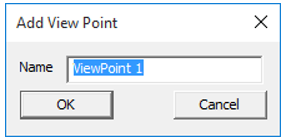

View Point List
In VCollab Pro, users can define and create different viewpoints (.vpt files) for different types of views on a given model. These views can be retrieved through viewpoint states. A viewpoint story can also be built which can be exported into a PPT file. Creating these animated paths or walk-through models helps users to gain better insights on a model.
The first user defined viewpoint is the default viewpoint that is seen when the model is loaded. When a user exports the viewpoints to a VPT file, all the existing viewpoints are saved in it.
A view point state may contain
- Notes
- Annotation
- Display mode
- Probed CAE result labels
- Pick and move part state
- Exploded view
- Measurements
- Cut section
- CAE result information.
- Merged models view.
- Background Mode and Image.
Note
- Standard Views
- These viewpoints are not stored in a CAX file.
- All standard views are generated by default.
- Users can add and update viewpoints using the Capture Camera option in the context menu.
- Only viewing position and orientation are saved. Other states are not saved.
- These viewpoints can be saved through profile and cannot be saved in CAX file.
Viewpoints Panel
Viewpoints panel is one of the tabs on the left span of VCollab Pro.
Path Lists all the paths added by the user Elapsed Denotes the elapsed time to complete animation of a path Estimated Time in Secs Displays estimated time. Users can edit this value.
Steps to create viewpoint states
Load a CAX Model.
Add notes through Tools | Label/Notes | Add Notes option
Click Edit | Viewpoints List.
Right click on the Viewpoints panel to open the context menu

Click Add View Point which opens up the Add View Path dialog box if no view path exists.
Enter a Path name,say ‘Path1’ .
Click OK to open up Add View Point dialog.

Enter a view point name, say ‘ViewPoint-01’ .
The current view with the Notes will be stored in the viewpoint by the name ‘ViewPoint-01’. Path name and view point name will be displayed.
Follow the above steps to create more view points with different states.
Animating Viewpoints
If multiple viewpoints are created, they can be played as animation
- Right Click on Viewpoints Panel.
- Click Animate path. The animation will start playing
Steps to retrieve a viewpoint state
Click on the Viewpoints tab.
Click on a view point and notice that the stored viewpoint state is retrieved and applied on viewer.
Below is a movie, which shows different viewpoint states with detailed information in each state.
Steps to export all viewpoint states as images in PowerPoint
Right click to open the viewpoints context menu.
Click Export Image As | PowerPoint....
Enter a filename in the save file browser dialog and click Save
Click Yes to provide a template or No to continue without template.
All the viewpoint states are inserted as images into PowerPoint.
First slide is left as an empty page for the title of the presentation if template is provided as shown below.
If a viewpoint contains CAE Animation state, animation will be captured as an animated gif in the PPT file.


Steps to export viewpoints
- Right click inside the viewpoints panel.
- Select Export Viewpoints from the context menu.
- It opens up the file browser dialog box.
- Select file type as .vpt to store viewpoints
- Select file type as .ppt to store viewpoints states into ppt image slides.
- Click Save.
Steps to Import Viewpoints
- Right click inside the viewpoints panel to open the context menu
- Click Import viewpoints
- It opens up the file browser dialog box.
- Select any .cax or .vpt file to import view points.
- Click Open and observe that view paths are imported.